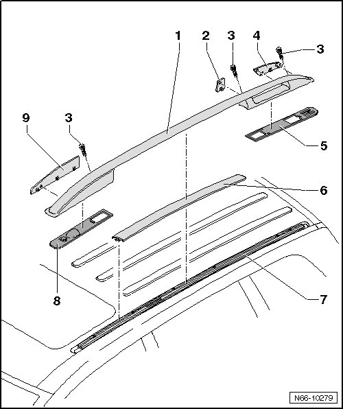

Roof Rail Assembly Overview
Roof Luggage Carrier
Roof Rail Assembly Overview

1 Roof Rail
• Removing and Installing, refer to --> [ Roof Rail ] Roof Luggage Carrier
2 Center cover cap
3 Bolt
• Bolts are micro-encapsulated, new ones should always be used
• 3 pieces per side
• 20 Nm
4 Rear cover cap
5 Rear seal
6 Cover strip
• With metal insert, do not bend when removing
• Pull out to remove from guide rails
• Note "outer vehicle side" inscription on bottom side
• For left and right, but not symmetrical
7 Guide rail
• Removing and Installing, refer to --> [ Guide Rail ] Roof Luggage Carrier
8 Front seal
9 Front cover cap